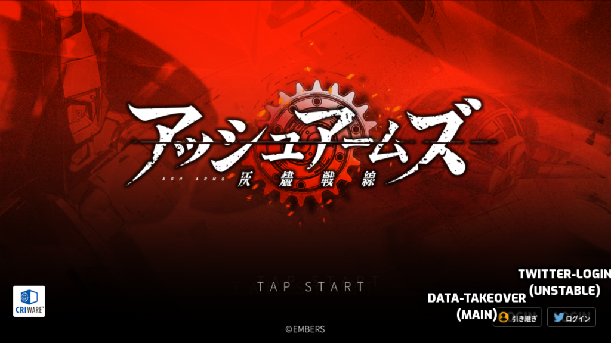
LOGGING-IN
Tap To Start Game and login (if you already have account setup you just simply start game and play).
New-Game: If you have never played before simply start the game and after you complete the tutorial simply follow to next section "Saving-Progress".
Data-Takeover: Is the option you should use and is advised ever since the major system update around end of 2022.
Twitter-Login: Is the option you shouldnt use as the api was changed a while ago and is unstable and or non-uasable to login to the game.
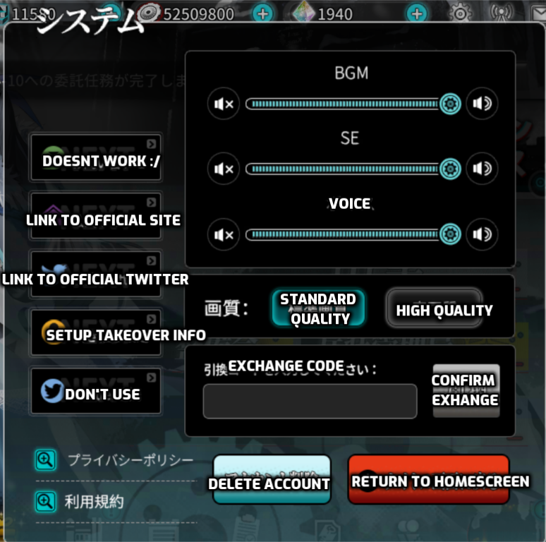
SAVING-PROGRESS
Creating-Code: At the homescreen select the gear icon in top right of screen,
after that select the "Setup Takeover Info" button upon doing so you will get popup your id is generated automatically, just create a password in the bottom section and press the red button to confirm your new login data,
Note: (WRITE THIS DOWN SOMEWHERE DO NOT LOSE IT, BOTH THE ID & PASSWORD).
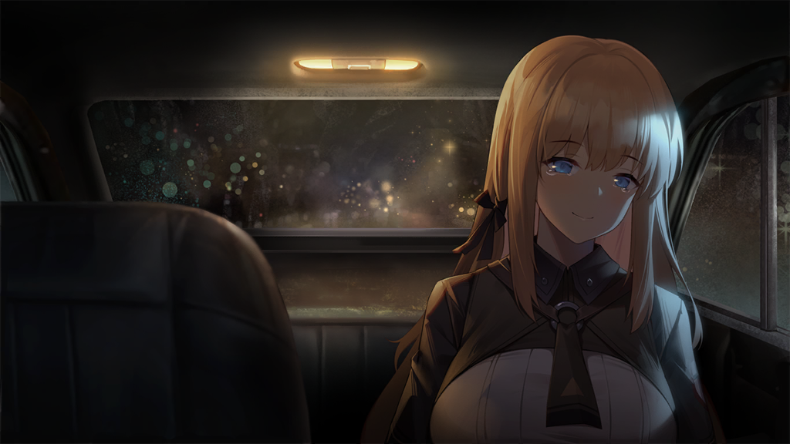
RECOVERING ACCOUNT
Getting Account Back: If you somehow have lost your account info or your just returning to the game,
after a while and dont remember info follow these steps to recover it.
Have images of your account name, account level, and resource amount if possible paid resources included.
Have general images of your dolls and any skins you have purchased.
With these in hand you now simply email asharms [cs_ash@asharms.com] and await for them to recover it(english should be fine so dont be discouraged).
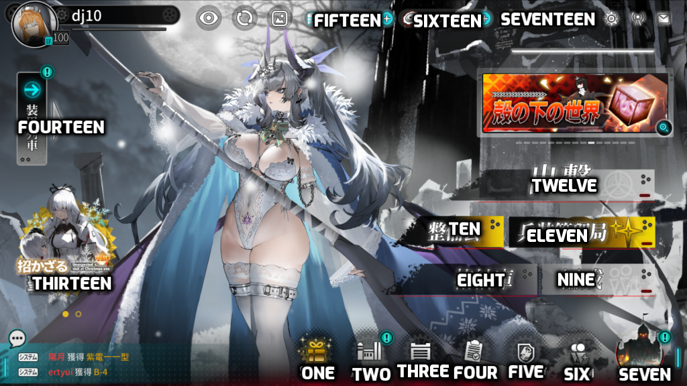
HOME-SCREEN
SHOP: The place where you purchase various items, using in game currency or irl currency(JPY/ if on cn version ->CNY).
Mass Production Factory: The place where you mass produce more dolls😏.
Resource Storehouse: The place where all your resources and various other items go.
Missons: Where youre missons are located, listed from top to bottom as such [All,Daily, Weekly,Main].
Camerlengo: The place where the battle pass is located, for more info on "Camerlengo" click ->here.
Friend Contacts: As easily noticed this is where your friends/friend requests will be located.
City Reconstruction: The place where certain recources are colleted and various benefits lie.
Hangar: The safe place where our dolls are stored.
Formation: The place where you set your battle formation for your dolls.
Tinkering Collection: The place where you spend fuel to "build" dolls by selecting four seperate reigons to search and gather parts.
Armament Management: The place where you pull for more dolls to use.
Sortie: The place where you carry out the activities of your main missions and such.
Events: This is just the place where current events are placed.
Armored Train: The place where you send your dolls out in a armored train to gather valuable resources.
Fuel: The thing you need in order to go to battle and to produce more dolls.
Gears: The resource used for various things and doll enhancments.
Crystals: The currency of which you use to pull for dolls and do special things with (note: these show free ones + purchased).
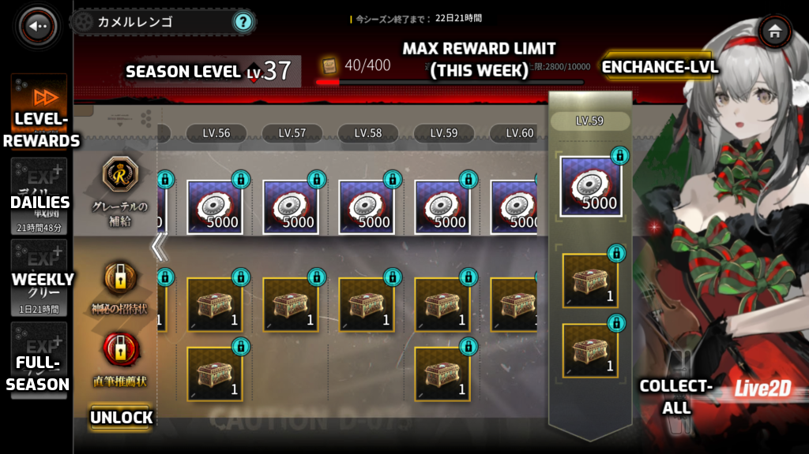
Camerlengo
The top portion is the free portion the bottom part is the paid portion unlockable via selecting the "Unlock" button and purchasing it using irl currency.
Enchance Level: enables you to increase your current season points you have obtained (100 at a time) possible by using crystals(free).
Daily Missions:
- Clear any main stage 2 times.
- Clear any main stage 5 times.
- Clear any main stage 10 times.
- Clear any main stage 15 times.
- Clear any main stage 20 times.
Weekly Missions:
- mass produce 20-dolls.
- Do 10 armored train expeditions.
- Clear any main stage 100 times.
- Complete 20-training missions.
- Fuse either inteli frames or personal implants 10-times.
- Open 5-M4 boxes.
- Clear any stage 200-times
- Perform scouts 5-times
All Season Missions:
- Defeat 150-360-600 "flying species"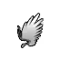
- Defeat 130-350-560 "floating species"

- Defeat 110-320-520 "defender species"
- Defeat 130-350-560 "sniper species"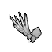
- Defeat 150-380-600 "Hunting species"
- Defeat each of the listed [Sitting Crown,Crystal Flower, Masednia, Uren, Weiss Blaut,Abricius Rex] "Symbiotic" enemies 10-25-50 times.
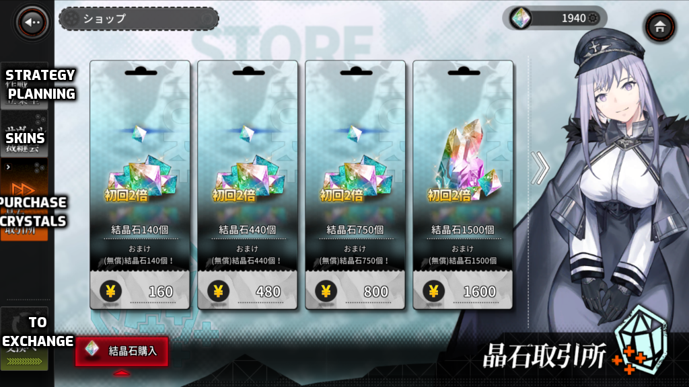
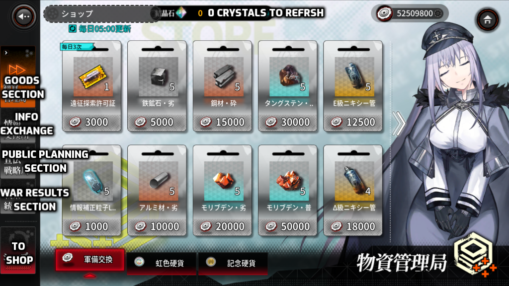
SHOP
Purchasing Crystal: you can purchase crystals by creating jp google play account registering card(though might be impossible to do for some outside jp).
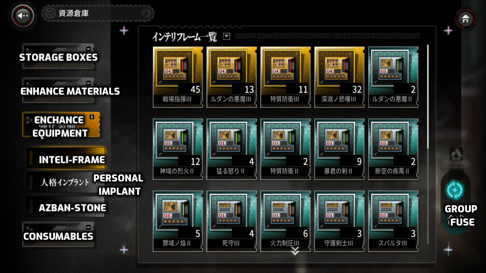
RESOURCE STOREHOUSE:
Group Fusing: Allows you to select multiple frames to fuse filtered by level
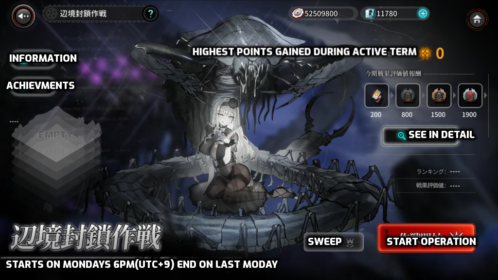
BLOCKADE:
If you manage to complete this mode on either easy,normal,hard,lunatic, you gain bonus points in accordance to the difficulty you opt to play in,
-
EASY: additional points gained: 180+, calamity level: 30, number of blockades: 2
Normal: additional points gined: 960+, calamity level: 80, number of blockades: 4
Hard: additional points gined: 2160+, calamity level: 120,number of blockades: 6
Lunatic: additional points gined: 2160+, calamity level: 120,number of blockades: 6+